Stage de 2ème année de Master
Présentation
Durant mon stage de 2ème année de master à l'université de Toulouse III - Paul Sabatier, j'ai pu effectuer mon stage au laboratoire APC (Astroparticule, Particule et Cosmologie) de Paris dans le département de Cosmologie. J'ai pu travailler avec l'équipe de Jean-Christophe Hamilton au sein de la collaboration QUBIC sur la séparation de composantes astrophysique pour cette expérience visant à détecter les modes B de la polarisation du fond diffus cosmologique (CMB).
Introduction
La cosmologie contemporaine tente de retracer l’histoire de l’univers de notre époque aux instants les plus primordiaux. Les théories dont on dispose aujourd’hui nous décrivent un univers de plus en plus chaud et dense au fur et à mesure que l’on remonte le temps. Celles-ci échouent à décrire la physique de notre univers dans ses tous premiers instants car il faut mêler relativité générale et mécanique quantique. Cette théorie nous est encore inconnu, cependant il est possible de tester nos hypothèses avant le temps de Planck qui correspond à `t_(text{Planck}) ≈ 10^(-44)` s après le supposé instant initial.
Nos théories prédisent certains phénomènes qui ont déjà été vérifié expérimentalement tels que l’expansion de l’univers, le fond diffus cosmologique mais aussi d’autres phénomènes tels que l’inflation cosmologique qui est une expansion très importante de l’univers en très peu de temps. Celui-ci se serai étendu d’un facteur `10^(26)` en un temps de l’ordre de `10^(-36)` s à `10^(-33)` s. Cette théorie de l’inflation cosmique permet notamment de proposer une solution au problème de platitude qui nous montre qu’il est difficile d’expliquer théoriquement la faible courbure de l’univers dans son ensemble. L’inflation permet aussi de proposer une solution au problème de l’horizon qui nous montre que certaines zones de notre univers semble particulièrement similaire alors qu’elles n’ont eu le temps d’échanger aucune information. L’inflation peut à première vue échapper à notre compréhension mais est une théorie avec beaucoup de vertus et qui si elle est validé, permettrait de faire un pas de plus vers la compréhension de notre univers et de ses débuts.
Au fur et mesure que l’on déroule le fil de l’histoire de notre univers, l’univers qui est dense et chaud devient de plus en plus froid et transparent. A 380 000 ans après le supposé Big Bang, la première lumière de l’univers émise que l’on appelle aujourd’hui le fond diffus cosmologique (ou CMB en anglais pour Cosmic Microwave Background) contient des informations cachées essentielles pour la compréhension de l’univers très primordial. On s’intéresse ici à la polarisation de ce rayonnement qui contiendrai des perturbations scalaires et tensorielles que l’on appelle les modes E et B. L’expérience QUBIC propose la mesure des modes B de la polarisation du fond diffus cosmologique en utilisant une technique innovante qui est l’interférométrie bolométrique. Celle-ci permet de combiner l’avantage de l’interférométrie qui est la contrôle des systématiques instrumentales et des bolomètres qui permettent d’avoir une meilleure sensibilité. Les modes B étant un signal très faible, il est nécessaire de penser un instrument extrêmement précis et dont les caractéristiques sont très bien connu afin de limiter les systématiques et autres effets indésirables.
Un nouveau problème se pose maintenant pour la mesure des modes B de la polarisation du CMB. Certains calculs montrent qu’il peut y avoir de la fuite des modes E vers les modes B ce qui est ici un problème, notamment dû aux effets systématiques de l’instrument. Un autre problème important qu’il faut tenir compte et qui sera ici le sujet de ce rapport est la création de mode B dû aux avants plans astrophysiques notamment à cause de la poussière du disque de la voie lactée. Une première tentative a été faite entre 2010 et 2012 avec la mission BICEP qui publie dans la revue Nature la première observation des ondes gravitationnelles primordiales (ou modes B). L’année d’après, une correction est publiée en expliquant que le signal vue réellement par BICEP fût la polarisation engendrée par les avants-plans astrophysiques de notre voie lactée. Cette mission nous enseigne que dans l’étude du CMB et plus particulièrement dans la recherche des modes B primordiaux, le contrôle des avants-plans est une chose capitale pour la validation de la théorie. Il existe aussi une fuite des modes E vers les modes B avec l’effet de lentille gravitationnelle, celui-ci se voit plutôt aux plus petites échelles angulaires (vers les `ℓ` plus grands) ce qui n’est pas vraiment un problème pour QUBIC.
Pour corriger cet effet, on va devoir mettre en place un algorithme de séparation de composante astrophysique, qui grâce aux cartes QUBIC va pouvoir nous fournir des cartes de CMB « purifiées » des autres composantes comme l’émission thermique dû à la poussière galactique dans un premier temps. Dans un second temps et si le temps nous le permet, on pourra s’intéresser à l’émission synchrotron qui est le deuxième effet à prendre en compte. Cette étape permet de s’assurer que le signal reçu provient bien de la source qui nous intéresse ici, le fond diffus cosmologique. Pour effectuer ceci, on utilisera le package FG-Buster dont le fonctionnement sera expliqué dans la troisième partie mais qui est une méthode paramétrique de séparation de composantes astrophysiques. L’un des principaux enjeux de ce stage et d’une possible thèse par la suite sera d’appliquer cette méthode de séparation de composantes et de l’adapter au mode de fonctionnement particulier de l’instrument QUBIC. En effet, celui-ci pendant la phase de map-making produit des cartes possédant des corrélations spatiales (entre les pixels voisins) et des corrélations fréquentielles (entre les sous-bandes). De plus, le lobe synthétique de QUBIC possédant plusieurs pics à la différence d’un imageur classique, devra être pris en compte dans cette séparation. Pour finir, dans cette étude on verra une méthode de séparation dite « map-based », c’est-à-dire qui s’intéresse à l’intensité des pixels. Une des suite à donner lors d’une possible thèse au sein de l’équipe QUBIC serait de compléter cette approche et en parallèle de développer une méthode dite « spectrum-based », c’est-à-dire dans la base des harmoniques sphériques. Le développement de ces deux méthodes pourra être intéressant afin de comparer les résultats par soucis de cohérence et au final pour calculer le spectre de puissance angulaire des modes B primordiaux. L’instrument QUBIC pourrait être un atout essentielle dans l’observation des modes B à grandes échelles de la polarisation du fond diffus cosmologique, ce qui validerait la théorie de l’inflation cosmique et serait un grand pas dans la connaissance de l’histoire de notre univers.
Quelques éléments théorique...
L'inflation
Le modèle de l’inflation permet de résoudre de nombreux problèmes en cosmologie, notamment le problème de platitude et permet d’expliquer pourquoi notre univers est essentiellement homogène. Cette théorie de l’inflation prédit une expansion exponentielle de la taille de notre univers permettant de faire la transition entre un univers quantique constitué d’une soupe de particule élémentaire et où toutes les interactions fondamentales sont mélangés vers un univers classique.
Cette théorie a été introduite pour tenter de résoudre deux problèmes importants en cosmologie, le problème de la platitude et le problème de l’horizon. Le problème de la platitude est la difficulté qu’ont nos théories pour décrire la très faible courbure de notre univers à très grande échelle. Cette platitude vient du fait que la partie visible de notre univers est très petite devant l’univers tout entier. On peut faire un analogie avec la Terre qui nous paraît plate à notre échelle sur le sol, mais si l’on prend du recul, celle-ci possède bien une courbure non nulle. Cet effet de platitude n’est donc qu’une illusion pour nous et nos instruments. Le deuxième problème est le problème d’horizon qui montre que certaines zones de l’espace ont des grandeurs physiques extrêmement proche tout en sachant qu’elles n’ont pu échanger de l’information. Dans la partie suivante, nous présenterons le fond diffus cosmologique plus en détail mais celui-ci nous indique que l’univers profond rayonne comme un corps noir de 3 Kelvin environ. Ce fond diffus possède des anisotropies de l’ordre de `10^(-5) text{K}` mais comment deux endroits de l’univers qui n’ont pas pu échanger d’information peuvent-elles avoir la même température ?
Pour résoudre ces problèmes fondamentaux, on fait appel à la théorie de l’inflation qui nous dit que pendant une fraction de seconde, l’univers s’est étendu d’un facteur immense. Pour régler les problèmes cosmologiques, cette inflation a du étendre notre univers beaucoup plus vite que la vitesse de la lumière ce qui a donc permis un contact dans le passé entre deux régions qui pour nous aujourd’hui n’ont pu communiquer entre elles. L’inflation peut échapper à notre intuition mais permet de résoudre des conflits ainsi que d’expliquer certaines observations dont l’une d’entre elle est le fond diffus cosmologique.Le fond diffus cosmologique et sa polarisation
Le cadre théorique dans lequel on se place à présent est un univers en expansion remplit d’un plasma primordial. Ce plasma constitué d’une soupe de particules élémentaires (protons, électrons, photons,...) et en très forte interaction les unes avec les autres. A cette époque, le fluide primordial ionisé empêche les photons de se déplacer librement, leurs libres parcours moyen est alors très faible ce qui rend ce plasma opaque à la radiation. L’univers se dilue alors, sa température et se densité baisse ce qui permet à un moment, aux noyaux atomiques de capturer les électrons libres, créant ainsi les premiers atomes. On désigne par la recombinaison ce moment, les atomes interagissent très peu avec les photons, l’univers devient alors brutalement transparent, c’est l’émission de la première lumière de l’univers : le fond diffus cosmologique.
On désigne par surface de dernière diffusion la surface où le rayonnement fossile à été émis, soit à 380 000 ans après l’instant zéro. Cette surface dessine une sphère de 13.7 milliard d’année lumière autour de l’observateur. Elle désigne une région de l’espace liée causalement à l’observateur, c’est-à-dire où le rayon de cette sphère est la distance maximale entre laquelle deux objets ont pu échanger de l’information, ici des photons. Cette surface agit comme un mur optique aux observations, il s’agit de l’image la plus lointaine que l’on pourra obtenir de notre univers en utilisant une information électromagnétique. Pour aller plus loin dans les observations, il faudra donc nécessairement passer par un autre médiateur de l’information comme les neutrinos ou les ondes gravitationnelles. Lors de l’émission des premiers photons à la dernière surface de diffusion, le rayonnement suit une loi de corps noir définit par :
`B_(nu) (T) = (2 h nu^3)/(c^2) (1)/(e^((h nu)/(k T)) - 1)`
où h est la constante de Planck, ν la fréquence du rayonnement, k la constante de Boltzmann et T la température du corps. Le rayonnement fossile suit donc cette loi avec une température homogène dans toute les direction de l’ordre de T ∼ 3000 K et `Delta T⁄ T ≈ 10^(-5)` . Pendant que ce rayonnement nous parviens dans toutes les directions, l’univers continue de s’étendre ce qui, par l’effet Doppler provoque un décalage vers le rouge du rayonnement de l’ordre de `z ≈ 1000` . Le signal qui nous parvient ne provient donc plus d’un corps noirs à 3000 K. Aujourd’hui, ce rayonnement correspond donc à l’émission thermique d’un corps de l’ordre de 3 K. Il a été mesuré plus précisément grâce au satellite WMAP (Wilkinson Microwave Anisotropy Probe) puis par le satellite Planck et correspond donc à l’émission d’un corps noir de température `T_0 ≈ 2.725 ± 0.003 K` .
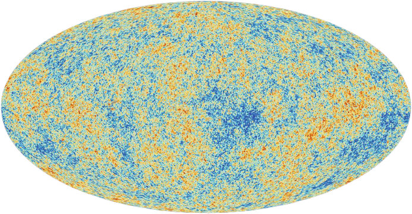Les anisotropies en température
Les précédentes missions montrent qu’il est plus facile de procéder à une mesure différentielle de la température de fond plutôt qu’à une mesure absolue de cette température. On notera `Delta T` la différence de température par rapport à la température moyenne définit plus haut. On peut décrire l’information lié aux fluctuations de densités du fond diffus cosmologique en regardant deux points sur deux lignes de visée `vec(n)_1` et `vec(n)_2` formant un angle tel que `cos(theta) = vec(n)_1 . vec(n)_2` , on définit donc une fonction de corrélation à deux points tel que :
`C(vec(n)_1, vec(n)_2) = < Delta T(vec(n)_1) Delta T(vec(n)_2) >`
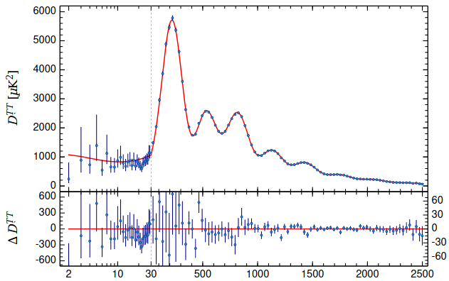Les champs E et B
Les paramètres de stokes I, Q et U sont des grandeurs très pratique à utiliser pour caractériser le champs électromagnétique. Ils possèdent néanmoins un désavantage dans notre situation, les paramètres Q et U décrivent tous les deux la polarisation linéaire du champs car l’un est simplement une rotation de l’autre, ce qui les rends dépendant de l’orientation de l’observateur.
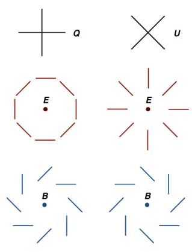
De la même manière, il est possible de définir des champs E et B grâce aux harmoniques sphériques tels que :
`E(vec(n)) = ∑ ∑ a_(lm)^E Y_(lm) (vec(n))``B(vec(n)) = ∑ ∑ a_(lm)^B Y_(lm) (vec(n))`
Le CMB étant faiblement polarisé (environ 10%), ces signaux sont assez faibles devant le paramètre d’intensité I. Ces champs sont donc maintenant indépendant de la position de l’observateur et permettent de construire tout un champs scalaire. Le champs E est caractérisé comme un champs scalaire (invariant par rotation). Il permet de générer de la polarisation Q seulement contrairement au champs B qui lui permet la génération de polarisation Q et U , cette différence sera un problème qu’on appelle la fuite des modes B. En effet, les perturbations scalaire génère le champs E uniquement alors que des perturbations tensorielles (ondes gravitationnelles primordiales) génèrent quant à elles des modes E et B. Cet effet rend la détection des modes B encore plus difficile bien que le signal soit déjà extrêmement faible.
Les avants-plans astrophysique
Dans les expériences liées à l’étude du CMB, les avants-plans jouent le rôle de limitation majeurs. Les signaux très faibles que l’on cherche à mesurer sont bien souvent dans le meilleur des cas pollué voir complètement caché par les émissions des avants-plans astrophysiques. On peut citer par exemple l’émission free-free ou rayonnement de freinage. La théorie de l’électromagnétisme nous apprend que toute variation de vitesse d’une particule chargé produit un rayonnement. Les électrons libres sont ici freiné par le gaz galactique et produisent donc un rayonnement qu’il faut tenir compte pour les mesures du CMB. Dans notre étude, la source principale dont on va s’occuper est la poussière galactique de la Voie Lactée.
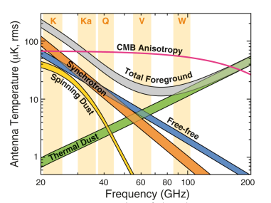
L'instrument QUBIC
Concept instrumental
L’instrument QUBIC fonctionne sur le principe de l’interférométrie bolométrique, il va combiner ces deux outils afin de profiter des avantages de chacune d’entre eux. Cette méthode permet notamment de profiter de la très grande sensibilité des bolomètres refroidit à très basse température ainsi que du très bon contrôle des effets systématiques de la part de l’interférométrie. Ces nombreux avantages pourraient être déterminant puisque l’on sait qu’il existe un mélange des paramètres de Stokes Q et U, et par la suite des fuites des modes E vers les modes B. On a donc un fonctionnement plus complexe mais qui permettra de dépasser certaines limites des imageurs classiques.
La nature interférométrique de QUBIC nous oblige à rajouter une étape de calibration. Celle-ci consiste, à partir d’une antenne qui envoie des signaux possédant différentes phases, à la correction de celles-ci par l’instrument afin que tous les signaux puisse être traité ensemble. Une phase d’étude a été faite par la collaboration 1 et continu encore aujourd’hui, afin de calculer les coefficients de correction. On appelle cette étape l’auto-calibration’. L’instrument QUBIC est aujourd’hui le seul instrument qui a pour objectif l’étude des modes B de la polarisation du CMB et qui possède cette étape clé de self-calibration. Celle-ci lui donne un avantage certains dans le contrôle des effets systématiques et donc dans la course aux modes B.
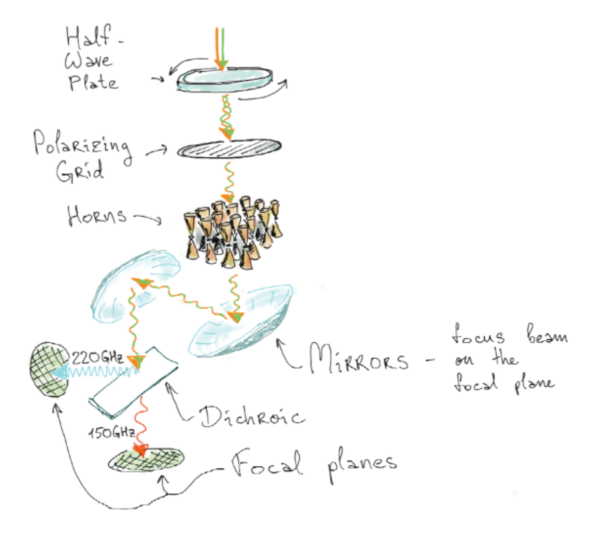La figure à gauche nous permet de voir un schéma simplifié de l’instrument, détaillant ainsi ses principaux composants. L’ensemble des éléments présent sur ce schéma sont bien entendu placés dans des cryostats permettant d’atteindre jusqu’à 300 mK. Les photons que l’on souhaitent étudier rentre par la fenêtre puis passe dans des filtres puis dans une lame demi-onde afin de choisir dès l’entrée la polarisation des radiations. Cette lame demi-onde nous permet d’introduire un retard de phase d’une demi longueur d’onde λ. Les radiations passent ensuite dans une grille polarisante afin de choisir la polarisation entrante. Un champs électrique `vec(E)` qui sera polarisé sur deux axes x et y subira une transformation et sera polarisé selon x' et y' de la manière suivante :
`vec(E)' = J_(text{rot})^t (theta) J_(text{HWP}) (theta) J_(text{rot}) (theta) vec(E)`
Ce qui donne au final une modulation :
`vec(E)' = (( cos(2 theta) , sin(2 theta)), ( sin(2 theta) , -cos(2 theta)))`La lame demi-onde permet de moduler la polarisation du signal entrant dans le cryostat et de réduire le bruit instrumental. Ces matrices de Jones permettront de prendre en compte les effets systématiques qui pour l’instant manque dans nos simulations numériques. La grille polarisante va nous permettre de choisir la polarisation du signal et donc de connaître l’orientation du champ électrique en fonction de l’angle de la HWP. Le signal passe ensuite dans ce qu’on appelle une matrice de cornet qui permet de séparer les faisceaux et de former un lobe sur le ciel. Ces cornets jouent le même rôle que les fentes dans l’expérience des fentes d’Young. La lumière venant du ciel va donc passer à travers chaque cornet, les ondes électromagnétiques vont donc interférer et former une figure spécifique à l’instrument.
Comparaison avec un imageur classique
L’instrument QUBIC fonctionne sur un principe totalement différent d’un imageur classique. Celui-ci combine l’interférométrie avec la mesure du signal par des bolomètres refroidit à très basse température (environ 300 mK) pour avoir une meilleure précision. Ce mélange permet de combiner les avantages de chacune des deux techniques afin d’en tirer une mesure plus fine et avec moins de systématique.

Par exemple, QUBIC scanne le ciel a travers son lobe synthétique et permet donc de voir le ciel différemment d’un télescope classique. La figure 3.4 nous montre une coupe en deux dimensions de ce lobe synthétique. A la différence d’un imageur classique, le lobe de QUBIC possède plusieurs pics et la place de ces pics dépend directement de la fréquence. Physiquement, l’instrument observera différentes parties du ciel à différentes fréquences. C’est l’un des fondements de la spectro-imagerie qui est l’une des forces de l’instrument QUBIC et qui permet de créer des cartes à différentes sous fréquences dans les bandes à 150 et 220 GHz. Cette approche permettra à terme de mieux gérer les avants-plans si dérangeant dans l’étude du CMB. De plus, ce lobe synthétique permet de voir les corrélations angu- laires du ciel, ce qui facilitera grandement l’estimation des spectres de puissance des anisotropies de température et de polarisation du fond diffus cosmologique.
De plus, l’interférométrie est connu pour avoir un bon contrôle des effets systématiques, c’est-à-dire aux erreurs de mesures liées à l’instrument intrinsèquement. A côté du développement de l’instrument, la collaboration QUBIC se concentre sur la « self-calibration » qui vise à calibrer au mieux l’instrument afin d’être le plus précis possible. Le terme self nous montre que le détecteur n’a aucune information sur la source ce qui rend la technique innovante. L’instrument est la seule expérience visant à trouver les modes B et ayant cette étape de self-calibration. Lors du passage de l’onde électromagnétique dans la matrice de cornet (jouant le rôle de fentes d’interférences), une figure d’interférence va se former. En ouvrant tour à tour des paires de cornets équivalentes, on va pouvoir observer une figure spécifique qui doit être la même pour différentes paires. De petites imperfections peuvent se cacher dans les figures d’interférences et sont nécessairement dû aux effets systématiques de l’instrument. Cette méthode permet de les quantifier et de traiter le lobe synthétique en conséquence. On a ici une méthode très forte de correction des effets systématiques qui est directement lié à la nature interférométrique de l’instrument, cela serait impossible avec un imageur classique.
Séparation de composantes
On s’intéresse ici au problème de séparation de composante grâce à l’algorithme FG-Buster mais avant de voir les résultats que l’on peut produire, il est peut être intéressant de voir le problème du map-making. Pour cela, on définit le signal que l’on reçoit dans chaque pixel comme :
`vec(d)_p = A_p(vec(beta)).vec(s)_p + vec(n)_p`
où `vec(d)` est le signal que l’on reçoit grâce à l’instrument (ou les TOD : Time Ordered Data dans le cas de QUBIC), `A(vec(beta))` est la matrice de mélange paramétrisé par les paramètres inconnus `vec(beta)` à estimer. Enfin, le vecteur `vec(n)` représente le bruit sur notre carte. Le problème est résumé dans l’annexe A et permet de voir la difficulté du traitement de données ainsi que de l’étape du map-making. On peut représenter l’équation ci-dessus de la manière suivante :
`((d_(text(pixel 1))), (d_(text(pixel 2))), (...), (d_(text(pixel N)))) = ((A_1^(text(CMB)), A_1^(text(DUST))), (A_2^(text(CMB)), A_2^(text(DUST))), (..., ... ), (A_N^(text(CMB)), A_N^(text(DUST)))) . ((s_(text(pixel 1))^(text(CMB)), ..., s_(text(pixel N))^(text(CMB))), (s_(text(pixel 1))^(text(DUST)), ..., s_(text(pixel N))^(text(DUST)))) + ((n_(text(pixel 1))), (n_(text(pixel 2))), (...), (n_(text(pixel N))))`
Dans l’annexe A, on a fait le développement de la likelihood utilisé par FG-Buster dans laquelle on a pu injecter l’expression du signal `vec(s)`. Cette opération nous permet de définir (voir le développement en annexe A) la fonction de vraisemblance spectrale tel que :
`-2 log mathcal{L}_(text(spec)) (beta) = K + (A^t N^(-1) vec(d))^t (A^t N^(-1) A)^(-1) (A^t N^(-1) vec(d))`Cette expression dépend uniquement des indices spectraux que l’on cherche à estimer ici. On va donc chercher à trouver la valeur des β (il peut y en avoir plusieurs) qui minimise cette fonction de vraisemblance. Une fois ces indices spectraux estimés, nous pourront créer les cartes de poussières et de CMB séparément. Dans notre cas, on fait l’hypothèse que la poussière est définie par une relation de corps gris à une température `T` , une fréquence `nu` et possédant un indice spectral `beta_d` . Cette relation est de la forme :
`s_d(nu) = A_d (nu)/(e^((h nu)/(k T)) - 1) (e^((h nu_0)/(k T)) - 1)/(nu_0) (nu/nu_0)^(beta_d)`Séparation dans un cas simple : sans bruit
On peut commencer à appliquer cet algorithme aux cartes générées par l’instrument QUBIC. On se placera dans le cas de 5 sous bandes dont les fréquences et résolutions angulaires sont résumés dans le tableau ci-dessous :
150 GHz nu (GHz) 134.63 141.57 148.87 156.54 164.61 FWHM (deg) 0.43750306 0.41605639 0.39566106 0.3762655 0.35782075 220 GHz nu (GHz) 197.5 207.6 218.3 229.6 241.4 FWHM (deg) 0.29829754 0.28367481 0.2697689 0.25654467 0.24396869
Ici on se place dans un cas simple afin d’appréhender la séparation de composantes avec FG-Buster. On considère donc que nos cartes possèdent donc un signal CMB ainsi qu’un signal de poussière que l’on voudra séparer. Cette séparation se fera donc sur 5 sous-bandes et pour une fréquence de référence `nu_(150)` = 150 GHz et `nu_(220)` = 220 GHz. Le tableau 4.1 nous montre que nos cartes sont à 00 des résolutions différentes, ce qui doit être pris en compte après discussion avec les auteurs de la méthode. L’ajout d’une fonction de mise à la même résolution a été une des étapes déterminantes. On lisse donc nos cartes avec un noyau gaussien afin de dégrader nos cartes à la pire résolution de chaque bande.
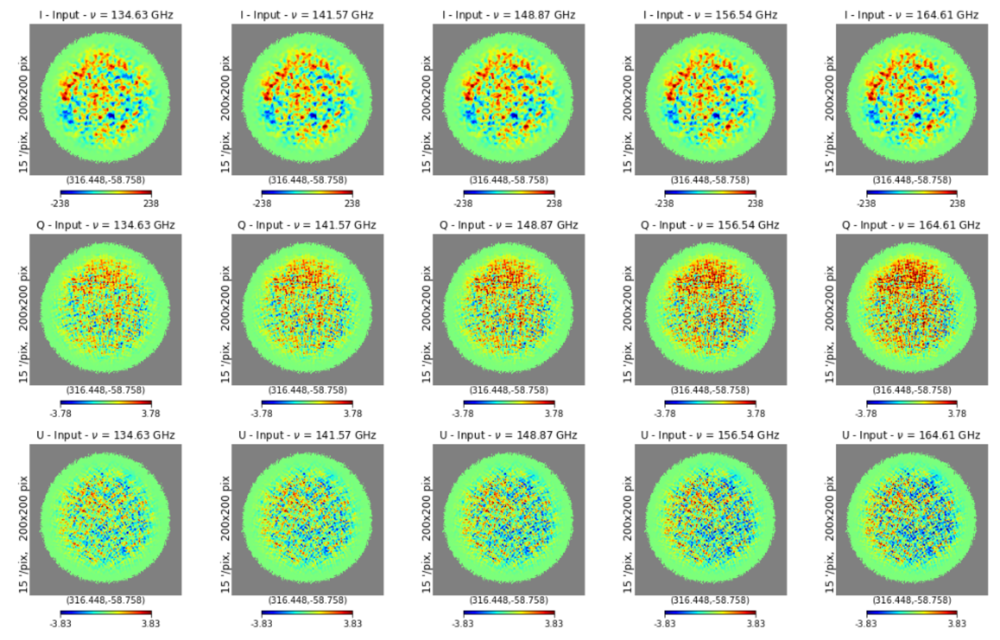Les cartes inputs de l’algorithme forme un tableau de taille (nfreq,nstokes,npix). On utilise des cartes au format healpix qui possèdent un paramètre NSIDE = 256, soit une pixelisation de l’ordre de `1.597 times 10^(-5) text( deg)^2` .
La figure ci-dessous montre les premiers résultats d’une séparation de composantes astrophysiques dans le cadre de l’expérience QUBIC. On a ici des inputs très simplifiées par rapport aux cartes finales mais le choix a été fait de procéder étapes par étapes en complexifiant le code au fur et à mesure.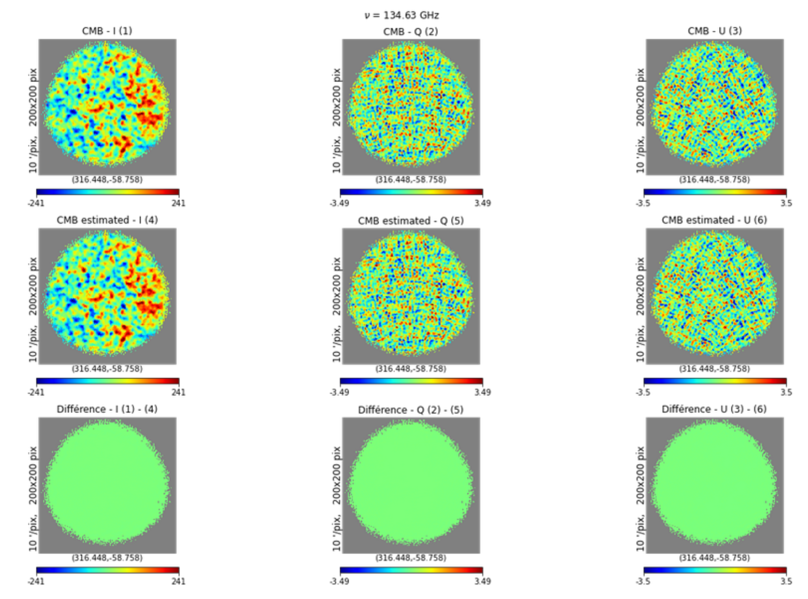On peut voir sur la cartes des résidues pour le CMB et la poussière qui est simplement la différence entre la carte théorique et la carte estimé que la reconstruction est très bonne. En faisant plusieurs réalisations de cette séparation, on peut avoir un histogramme des estimations du paramètre `beta_d` . On commence par faire un Monte-Carlo sur l’estimation de βd pour des cartes PySM simple puis sur des cartes QUBIC dont une option d’intégration sur les bandes a été activé. Cette intégration pourra avoir une influence sur l’estimation des paramètres, il peut donc être intéressant de voir comment se comporte l’algorithme en présence de l’intégration sur les bandes qui est une particularité de QUBIC.
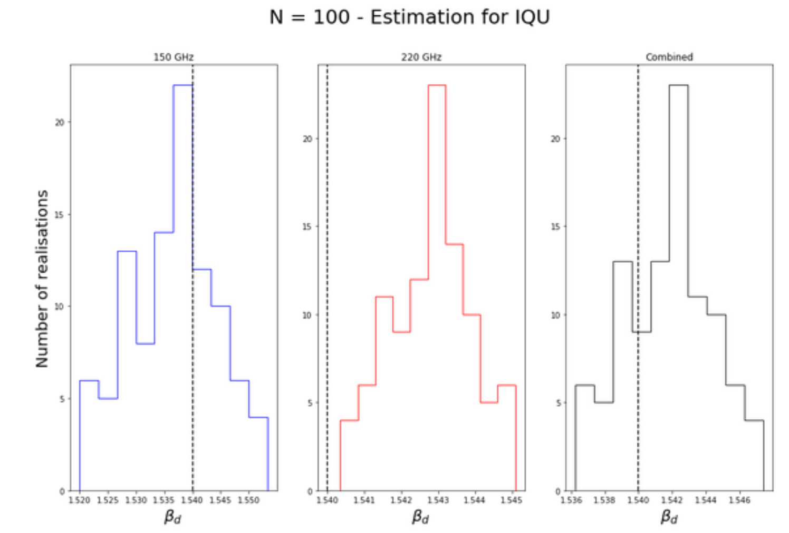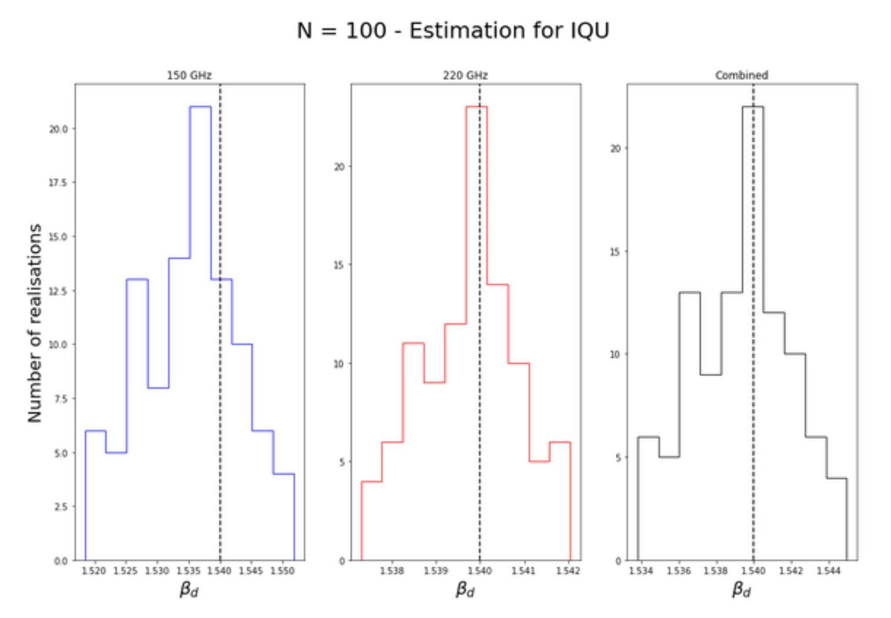Les figures ci-dessus nous permettent de voir que l’estimation est dans l’ensemble assez bonne pour les deux cas. La figure de gauche nous montre que l’estimation du paramètre `beta_d` est très bonne dans le cas où nous n’avons pas d’intégration sur les bandes. Ceci est un premier test concluant sur le fonctionnement de l’algorithme FG-Buster. Nous avons donc ici une première séparation de composantes dans un cas extrêmement simplifié.
Afin d’avoir un modèle un peu plus proche de la réalité, nous activons maintenant l’intégration sur les bandes. L’algorithme de génération de carte va donc créer plusieurs cartes au sein d’une même bande, puis les intégrer sur les fréquences. Cette opération fait en quelque sorte une moyenne sur ces réalisations. La figure de droite nous montre l’estimation du paramètre pour la bande à 150 GHz, celle à 220 GHz ainsi que la combinaison des deux. On voit que l’estimation est assez bonne dans le cas de la bande à 150 GHz mais qu’il y a un biais pour la bande à 220 GHz qui se reporte donc aussi dans la combinaison des deux. L’intégration permet de créer des cartes légèrement différentes des précédentes, il n’est donc pas absurde d’avoir un biais sur l’estimation des paramètres. Cependant l’estimation reste quand même assez proche de la valeur attendu même si cet effet doit être étudié pour pouvoir le corriger ultérieurement.Séparation en résence de bruit blanc et uniforme
Maintenant que l’on a vu que notre algorithme fonctionne pour un cas simple sans bruit, on va pouvoir complexifié légèrement notre modèle en ajoutant du bruit uniforme pour commencer. Lorsque l’instrument sera fonctionnelle et prendra ses premières données, le niveau de bruit correspondra à 3 ans d’acquisition. Un argument dans la fonction de génération des cartes nous permet de gérer ce niveau de bruit. Un avantage conséquent de la fonction de FG-Buster que l’on utilise est qu’elle estime elle même la matrice de corrélation du bruit `N = < n cdot n^t >` . La technique que l’on utilise est de calculer le RMS (pour Root Mean Square en anglais) des cartes de bruits afin d’en quantifier l’effet.
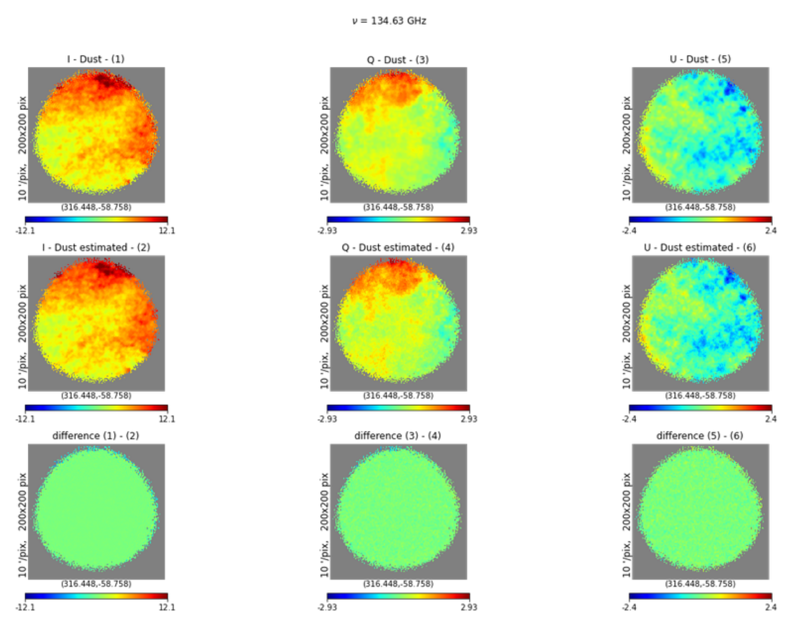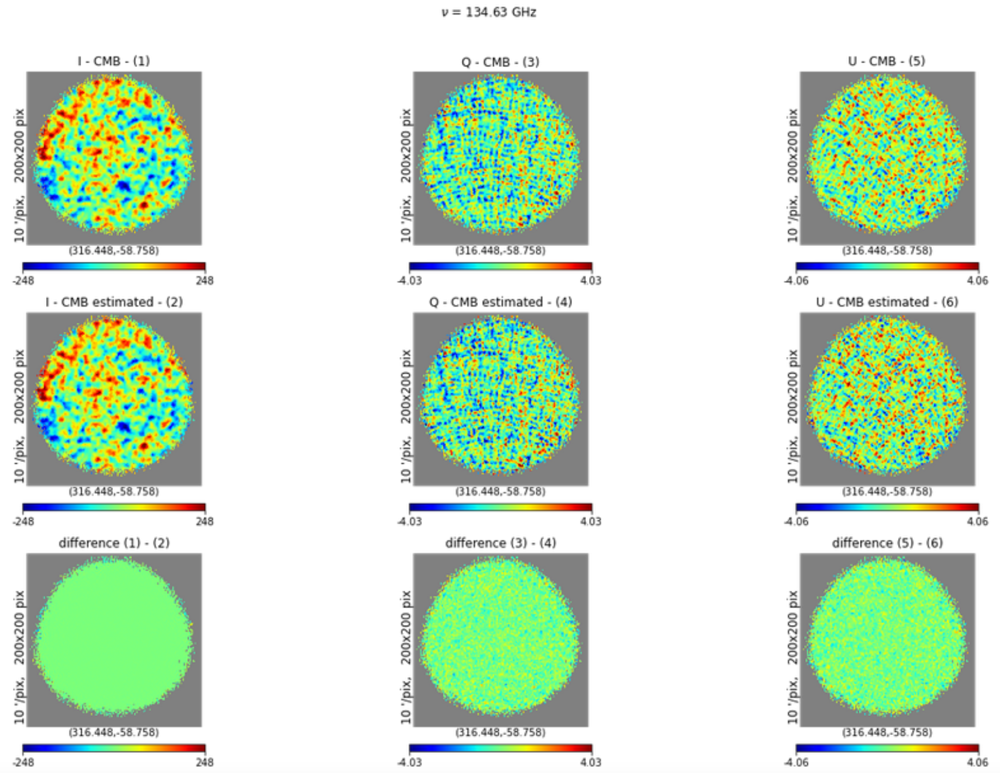Les figures ci-dessus nous montrent les cartes purifiées par FG-Buster dans un cas bruité. On voit que la reconstruction des deux composantes est très bonne (on a une estimation de `beta_d approx 1.539` dans ce cas). L’intensité I est très bien reconstruite, les paramètres Q et U montrant la polarisation linéaire est assez bien reconstruite malgré quelques imperfections aux petites échelles. On a donc ici un cas de séparation de composante fonctionnelle pour du bruit blanc au même niveau que celui de l’instrument QUBIC. Il peut être intéressant de voir la répartition des reconstructions des paramètres spectraux pour plusieurs réalisations de séparation.
La figure ci-dessous nous montre l’estimation du paramètre βd pour 200 réalisations différentes avec un niveau de bruit blanc correspondant à 3 ans d’acquisition de données. Dans la majorité des cas, pour la bande à 150 et celle à 220 GHz, l’indice spectral est plutôt bien reconstruit. On observe cependant une grande variance dans le cas de la bande à 150 GHz et au contraire, la combinaison des deux bandes permet de réduire cette variance sur la reconstruction de βd. Cette combinaison rend l’algorithme plus robuste au bruit que l’on peut mettre dans la carte, en effet ces deux bandes sont assez éloigné et permet donc d’avoir un bras de levier plus grand sur l’estimation. Cet avantage nous permet de donner plus d’information à FG-Buster que si les deux bandes étaient plus proche, on a donc un meilleur calcul de la fonction de vraisemblance ce qui conduit à une meilleure estimation des paramètres.
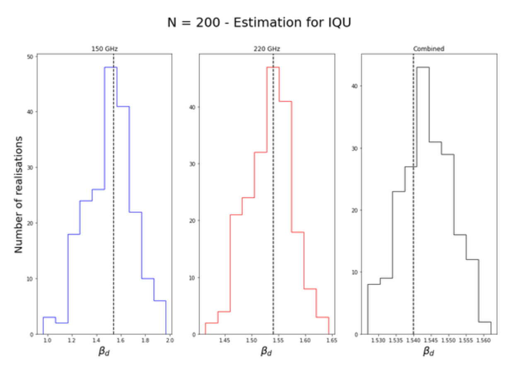La figure ci-dessous nous montre l’estimation du paramètre βd pour 200 réalisations différentes avec un niveau de bruit blanc correspondant à 3 ans d’acquisition de données. Dans la majorité des cas, pour la bande à 150 et celle à 220 GHz, l’indice spectral est plutôt bien reconstruit. On observe cependant une grande variance dans le cas de la bande à 150 GHz et au contraire, la combinaison des deux bandes permet de réduire cette variance sur la reconstruction de βd. Cette combinaison rend l’algorithme plus robuste au bruit que l’on peut mettre dans la carte, en effet ces deux bandes sont assez éloigné et permet donc d’avoir un bras de levier plus grand sur l’estimation. Cet avantage nous permet de donner plus d’information à FG-Buster que si les deux bandes étaient plus proche, on a donc un meilleur calcul de la fonction de vraisemblance ce qui conduit à une meilleure estimation des paramètres.
Calculs des spectres de puissances angulaire
Précédemment, nous avons vu que la reconstruction du paramètre spectrale βd se fait de manière plutôt bonne lorsque nous combinons les deux bandes de l’instrument QUBIC. Cette bonne reconstruction nous montre que la séparation de composantes est fonctionnelle, on dispose donc de cartes de CMB et de poussière donc on peut maintenant calculer les spectres de puissances angulaires. Dans les études de QUBIC, les spectres sont calculés en faisant l’hypothèse qu’aucun avants-plans ne sont présent (tout en sachant que c’est faux). Il est donc possible maintenant de calculer ces spectres tout en étant certains que les avants plans ne jouent plus aucun rôle.
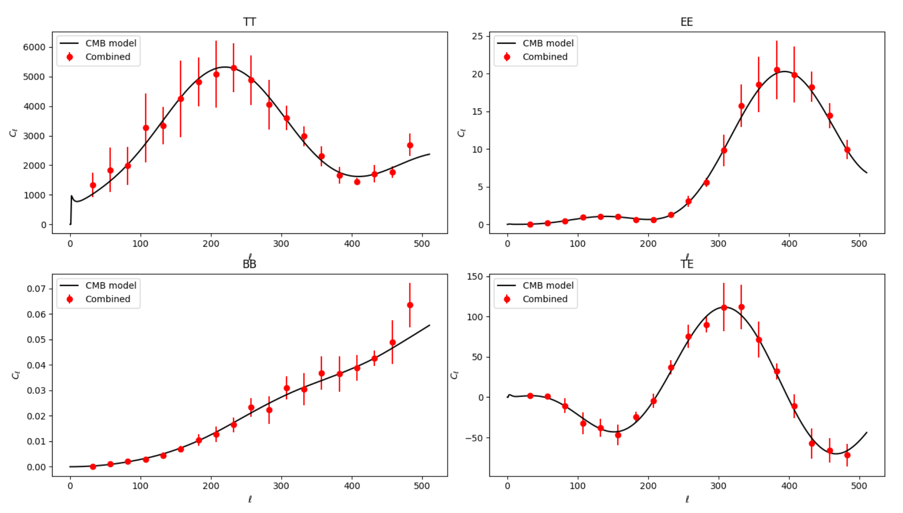Il est possible maintenant de faire des simulations Monte-Carlo en générant des cartes, appli- quant la séparation de composantes puis calculer les spectres de puissances angulaire. La figure supérieure nous montre ces résultats, la courbe noire correspond à un modèle typique de spectre de CMB. Les points rouges correspondent à l’estimation du spectre de puissance à partir d’une carte contenant du CMB et de la poussière, qui a été purifiées par FG-Buster. Cette première figure montre l’estimation des spectres dans un cas sans bruit. Pendant la séparation, les paramètres spectraux ont été plutôt bien estimé en restant aux alentours de 1.54. Cela nous permet de s’assurer que nos cartes de CMB ne sont plus pollué par la poussière galactique. Il existe un très bon accord entre l’estimation du spectre pour nos cartes purifiées avec le modèle considéré.
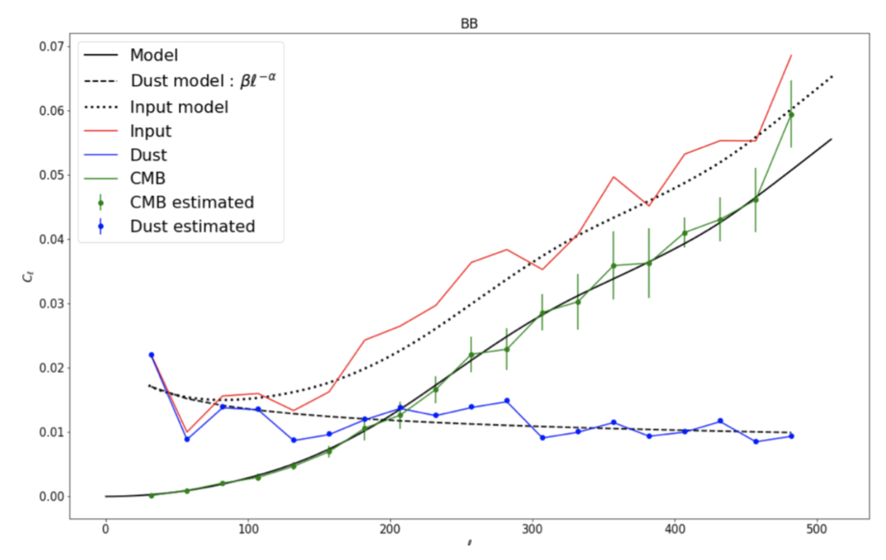Il est donc possible de construire les spectres pour chacune des composantes séparées. On a ici fait un zoom sur le coefficient BB vu précédemment et sur lequel on a affiché en noir les modèles de CMB, de poussière ainsi que de nos cartes inputs. Les points vert et bleu représentent respectivement l’estimation du spectre de puissance de nos cartes de CMB et de poussière purifiées. On a représenté par dessus par des traits pleins les spectres de cartes composés seulement de la composante en question. On voit que l’estimation des spectres est en très bon accord avec les modèles. On rappelle ici que la poussière peut être modélisée comme une loi de puissance de la forme `beta ℓ^(-alpha)` où `alpha` et `beta` sont deux paramètres libres qui peuvent être estimés.
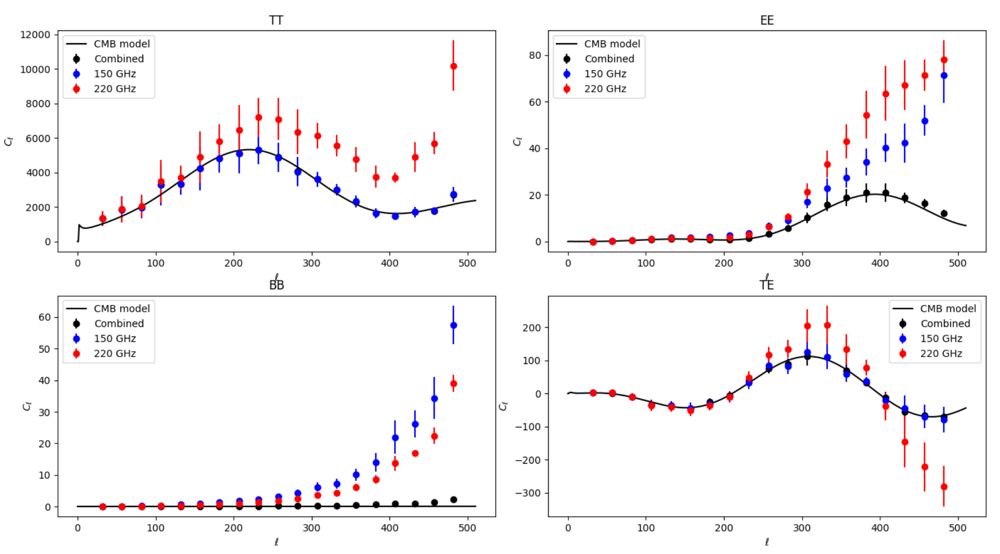On peut appliquer la même méthode en rajoutant du bruit dans nos cartes initiales. Ce rajout détériore l’estimation des paramètres spectraux. On utilisera pour corriger cet effet la combinaison des deux bandes de l’instrument QUBIC. La figure ci-dessus nous montre les résultats, comme on s’y attend, lorsqu’une seule bande est utilisée, l’estimation des spectres de puissances ne correspondent pas tout à fait au modèle. En revanche, la combinaison des deux nous permet d’avoir un certains bras de levier ce qui améliore nettement la séparation. On apporte beaucoup plus d’information à l’algorithme, qui procède donc à une meilleure estimation de sa fonction de vraisemblance.
Conclusion
Ce stage m’a permit de me pencher sur les questions de physiques fondamentale mais aussi sur un coté instrumentale qui est aussi important. Les missions de maintenance et de finalisation de construction de l’instrument m’ont permit de mieux comprendre son fonctionnement très particulier. Ces particularités rendent son analyse assez difficile mais permettront certainement de franchir un mur que certains télescopes classiques seront incapables de franchir. J’ai pu aussi participer à l’emballage et à la préparation de l’envoie de l’instrument (19 Mai 2021) pour sa destination finale qui est l’Argentine dans la région de San Antonio de los Cobres. Cet envoi est une étape de franchis vers les premières prises de données de l’instrument et donc vers la quête des modes B de la polarisation du fond diffus cosmologique.
Durant ces 5 mois de stage dans la collaboration QUBIC au laboratoire APC, j’ai pu me former à la cosmologie primordiale ainsi qu’à la physique du fond diffus cosmologique. Cela m’a permit de comprendre en profondeur la problématique que l’instrument cherche à répondre. La recherche des modes B de la polarisation du fond diffus cosmologique est une quête très difficile et qui sera pour moi l’une des prochaines grandes découvertes en cosmologie.
Ce stage m’a permit d’avoir une introduction très complète à l’interférométrie bolométrique, et m’a permit aussi de comprendre les problématiques liées à l’instrument et à l’analyse de données. Par exemple, avant de tenter d’implémenter une méthode de séparation de composantes, il a fallut que je me forme méthode liés à QUBIC. Au fil des années, la collaboration a développé un ensemble de code Python destiné à l’analyse de données, à la self-calibration,... Les premières semaines de mon stage ont donc consisté à apprendre à gérer ses fonctions spécifiques que se soit dans la génération de cartes, le calcul des spectres de puissances ou d’autres.
Ensuite, j’ai pu commencer à m’intéresser aux méthodes de séparation de composantes notamment à l’algorithme FG-Buster développé par Josquin Errard et Radek Stompor au laboratoire Astroparti- cule et Cosmologie à Paris. Cette méthode paramétrique de séparation de composantes tente d’estimer les paramètres spectraux libres qui dans notre cas sont simplement l’indice spectral de la poussière. Dans notre troisième partie, nous avons présenté la méthode générale employé, ainsi qu’une première approche simple sans bruit. On a vu que cette méthode fonctionne bien dans ce cas simplifié. On a ensuite pu complexifier légèrement notre modèle en ajoutant un niveau de bruit blanc correspondant à celui de QUBIC. Cet ajout a entraîné des modifications au sein de l’algorithme afin que l’on puisse estimer ce niveau de bruit pour chaque carte. Les résultats de la séparation en présence de bruit blanc sont visible et montre qu’on obtient d’assez bons résultats. De plus, l’un des avantages de l’instrument est de posséder deux bandes séparées ce qui nous permet de les combiner, et ainsi d’apporter plus d’informations pour contraindre les paramètres spectraux.
Une fois la méthode de séparation fonctionnelle pour un certain modèle de carte, on a pu calculer les spectre de puissances angulaire correspondant aux coefficients TT, EE, BB et TE. Ces spectres nous permettent de vérifier la bonne estimation de nos cartes de CMB et de poussière. Les estimations de ces spectres nous montre que la combinaison des deux bandes de QUBIC permettent encore une fois une meilleure reconstruction qu’en utilisant une simple bande. Au moment de la rédaction du présent rapport, je suis en train de prendre en compte le bruit non uniforme de l’instrument. Du fait de la stratégie de scan de l’instrument sur le ciel, nous passons plus de temps au centre des cartes que sur les bords, nous avons donc un niveau de bruit plus intense sur les bords de la cartes. Cette non-uniformité doit être prise en compte et c’est ce que je fais actuellement.
Pour mettre une perspective sur le travail effectué, nous avons donc appliqué une méthode de séparation de composantes astrophysiques dans un cas sans bruit puis dans le cas d’un bruit blanc. En revanche, nous savons que du fait de la nature interférométrique et de l’étape de spectro-imaging, les cartes générées par l’instrument possèdent des corrélations entre les paramètres de stokes et les sous-bandes (annexe D). Ces corrélations doivent être prise en compte dans l’algorithme afin d’avoir une séparation optimale. Ces matrices de corrélations devront ensuite apparaître dans le calcul de la fonction de vraisemblance. Cette étape de modification est une étape importante qui nécessite une modification en profondeur de l’algorithme, ce travail fera partie d’une potentielle thèse en parallèle d’autres missions de simulations ainsi que d’analyse de données.
Références
- D. Baumann. Tasi lectures on inflation. ArXiv e-prints, 2009
- Romain Charlassier. Mesure des anisotropies de polarisation du fond diffus cosmologique avec l’interféromètre bolométrique QUBIC. PhD thesis, 08 2012.
- Alexandre Friedmann. « Über die krümmung des raumes » [« sur la courbure de l’espace »].
- Alan H. Guth. Inflationary universe : A possible solution to the horizon and flatness problems. Phys. Rev., 1980.
- J.-Ch. Hamilton L. Mousset and QUBIC collaboration. Qubic II : Spectro-polarimetry with bolometric interferometry. ArXiv e-prints, 2020.
- A. Stebbins M. Kamionkowski, A. Kosowsky. Phys. rev. ArXiv e-prints, 1997.
- E.S. Battistelli M. Piat, G. Stankowiak and QUBIC collaboration. Qubic IV : Performance of TES bolometers and readout electronics.
- A. A. Penzias and R. W. Wilson. A measurement of excess antenna temperature at 4080 mc/s. Astrophysical Journal, 07 1965.
- Collaboration QUBIC. QUBIC page .
- Federico Stivoli Radek Stompor, Samuel Leach and Carlo Baccigalupi. Maximum likelihood algorithm for parametric component separation in cosmic microwave background experiments. Mon. Not. R. Astron. Soc. 392, 216–232 (2009), 2008.
- Josquin Errard Radek Stompor. FG-Buster .
- P. de Bernardis S. Masi, E.S. Battistelli and QUBIC collaboration. Qubic V : Cryogenic system design and performance.
- Marie Anne Bigot Sazy. Mesure des anisotropies de polarisation du fond diffus cosmologique avec l’interféromètre bolométrique QUBIC. PhD thesis, 10 2013.
- Mikhail Stolpovskiy. Development of the B-mode measurements pipeline for QUBIC experiment. PhD thesis, 07 2016.
- S.A. Torchinsky and QUBIC collaboration. Qubic 3 : Laboratory characterization.
- U. Zaldarriaga, M. et Seljak. An all-sky analysis of polarization in the microwave back-ground. Phys. Rev., 1997.